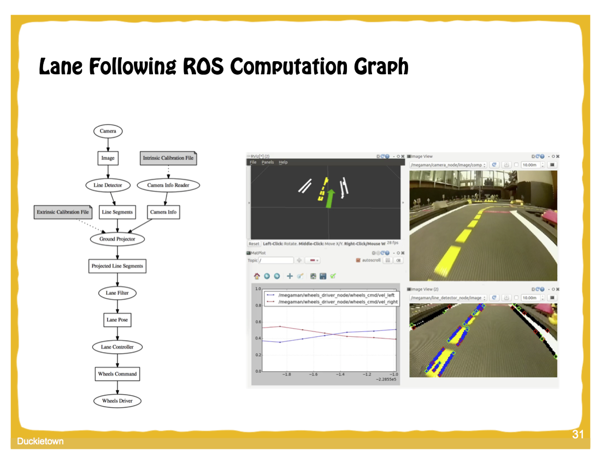
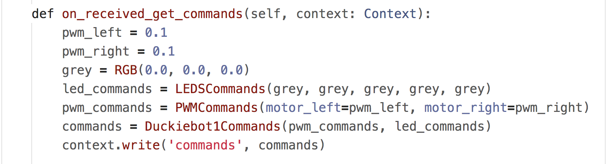
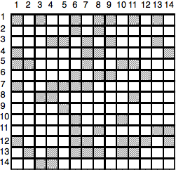
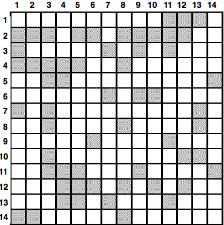
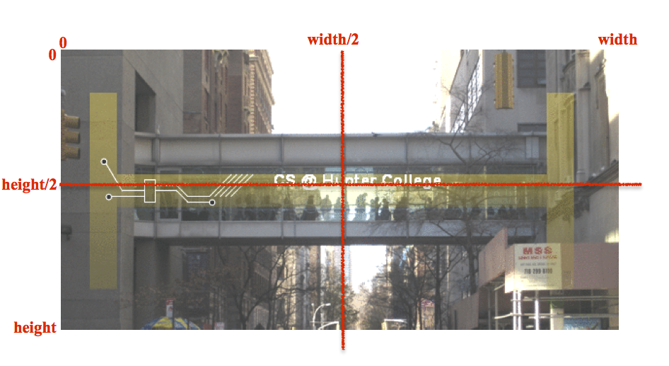
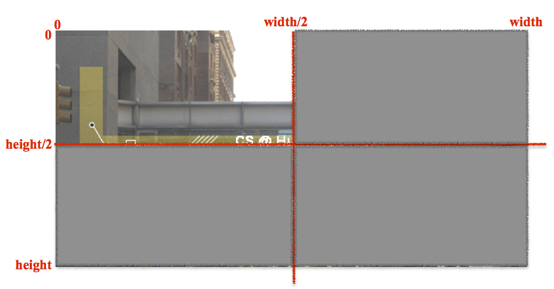

This workshop was made possible by a Google Award for Undergraduate Computer Science Research Focused Workshops for Women and the Office of the Provost at Hunter College.
Goal: To drive a calibrated robot through both towns, using the joystick program.
Equipment needed: Department linux laptop and duckieBot.
When you get a duckieBot,
We are using the linux laptops from the 1001E laboratory (the CSci 127 lab). Cart 1 laptops have the duckieTown software already installed. The laptops run Ubuntu Linux operating system. When you open the laptop, choose the "Computer Science Guest" account (the password is on the whiteboard). On the left hand side is a bar of icons, including icons for a browser (for accessing webpages) and the terminal window (for writing commands and launching programs).
For the morning session, we are following Duckiebot operation manual. We have the software loaded, so, we're skipping ahead to the Duckiebot assembly and setup.
Go to the documentation page for creating a duckieTown account:
Duckie Op Manual C-2: Duckietown accountOur regional community is New York. Make sure to include your institution as Hunter College. Having an account allows you to create tokens to use the dashboard (next section). You can copy the token by highlighting it and then clicking CTRL-Shift-C (and pasting by CTRL-Shift-V).
Much of our work will done via the terminal window. Click the icon on the left for the terminal (looks like a computer). It will launch a terminal window in which you can type commands.
To set up your token, type at the terminal:
$ dts tok set(The $ represents the prompt at the command line-- no need to type it.)
You can check to see that authentication worked, by typing at the terminal:
$ dts challenges info
Make sure you are on the wifi, duckieworkshop; the password is on the whiteboard. The duckiebots are connected to that wifi.
Check to see the robot is turned on and on the wifi:
$ ping DUCKIEBOT_NAME.local
where DUCKIEBOT_NAME is hunterbotXX with XX as the number of your bot. To stop the messages, type CTRL-C.To launch the dashboard, open up Chrome browser window (Firefox will work but flicker a bit):
DUCKIEBOT_NAME.localwhere DUCKIEBOT_NAME is the name of your bot.
We can run the duckieBot via the joystick demo. It's a nice example of using the duckieTown shell (dts) and also used as the control for other demos, so, good to try:
Duckie Op Manual C-7: Making your Duckiebot move
Now that everything is calibrated, use the joystick to make a complete lap of both tracks. Be careful not to run into other bots.
Let's test that we can move the duckieBot through the dashboard:
When you're done with your robot, gently disconnect the battery cables so that the batteries last longer between charges.
To see what your duckiebot sees, follow the directions in:
Duckie Op Manual C-8: Duckie Op Manual C-8: See what your DuckieBot seesThis will launch an additional window that has a camera input, filtered in different ways.
Now, we can calibrate the camera. To do so, you will need a calibration sheet (checkerboard patterned laminated paper).
Duckie Op Manual C-9: Camera calibration and validationNotes on how to speed up calibration of cameras:
Duckie Op Manual C-10: Wheel calibration
DUCKIEBOT_NAME.local:9000How many containers on your duckieBot? What is their status? We will be adding more containers in later sessions.
Goal: Run and understand the structure of the lane following demo.
Equipment needed: Department linux laptop and duckieBot. Paper and pencil for analyzing code structure.
DuckieTown comes with several pre-built demostration programs. We saw the joystick demo this morning. Several other programs use it as their "front end" and operation is done via its interface. One such demo is the lane following, where the ducks move forward, adjusting their direction to keep the white line on their right and the yellow dotted line in the middle.
$ dts duckiebot demo --demo_name lane_following --duckiebot_name DUCKIEBOT_NAME --package_name duckietown_demos
You can run the lane following demo, by clicking on the joystick controls and typing 'a' for autonomous navigation, and 's' for stop. You can toggle between driving manually with the arrow keys and allowing the lane following code to drive the duckieBot.
The lane following demo does best with a continuous lanes that does not have breaks for intersections, so, try driving first on the small town and then try on the larger town.
Next, let's look at the line filtering (as the duckieBot sees it) and tune the parameters to keep the duckies from cutting corners in the larger town. Start at Step 2 of:
Duckie Op Manual E-4: Lane FollowingAs it runs, it generates multiple image views that highlight the lines, signs, and obstacles detected as it moves (you can toggle through these on rqt_image_view). How does the bot read a sign? Brainstorm on what ROS nodes are loaded and sketch the diagram of how the nodes interact.
Now that you have run the lane following program, let's examine how it works. Here is an overview of the ROS code from Autonomous Mobility on Demand: From Car to Fleet course at ETH Zurich: 
In the diagram,
With your team, come up with a one-line description of what each node and topic represent in diagram. Make your best guess based on the names and your experience with the bot and feel free to ask questions!
If you have time, try the indefinite navigation demo. In addition to lane following, it will stop at intersections and recognize signs that are placed on the town.
Duckie Op Manual E-5: Indefinite NavigationAs it runs, it generates multiple image views that highlight the lines, signs, and obstacles detected as it moves (you can toggle through these on the rqt_image_view). How does the bot read a sign? Brainstorm on what ROS nodes are loaded and sketch the diagram of how the nodes interact.
Goals: Create and run a program, via the AIDO framework.
Equipment needed: department linux laptop and duckieBot.
The AI Driving Olympics (AI-DO) is an autonomous navigation competition for mobile robotics. The competition uses the the Duckietown platform and has a series of increasingly difficult challenges, starting with lane following for a single bot to the more complex task of managinig a fleet of bots on the road. While we won't be submitting to the competition (the last one was in December in conjunction with the NeurIPS 2019 conference in Zurich), we will use their framework. The AI-DO framework is set up so that participants will not need to be physically present at any stage of the competition, just need to submit their source code remotely. If the submitted code does well in simulation, it is run on real duckieBots.
Our first program is a (slightly-modified) version of the lane following template from the AI-DO2 (using the dt19 software). It goes straight forward, at a leisurely pace. Work through the following steps to download the code and run the code:
$ cd ~/Desktop/slowWalk
$ dts duckiebot evaluate --duckiebot_name DUCKIEBOT_NAME --duration 20 to run for 20 seconds (you can change the 20 to something bigger if you would like to run longer). It will ask you to confirm the key fingerprint (type: yes) and for the duckie login's password (quackquack). The first time you download a program will take 3-5 minutes to load the competition framework onto the robot. Future downloads will still ask for the password but will be very quick.
$ gedit &
to open the built-in graphical editor and run in the background (so we can continue to use the terminal to type).The file, solution.py, is the Python code that does the lane following. This particular file is very simplistic: it ignores everything it sees and just goes forward. The two functions that we will work with are:
We will start with the latter:

The function:
Challenge: Make your duckieBot go a bit faster: 0.25 instead of 0.10. Modify the solution.py and load on to your duckieBot following the same procedure as above.
Challenge: Make your duckieBot go in a wide circle. Modify the solution.py and load on to your duckieBot following the same procedure as above.
Challenge: What does the default template do? Try on your robot and read throught the python file, solutions.py. What lines control it's motion?
Extra Challenge: Modify your program to make a spiral (goes in increasingly large circles).
Extra Challenge: Modify your program to make a figure 8.
Goal: Understand the A* algorithm.
Equipment needed: pen/pencil and paper worksheet. For challenges: department linux laptop and duckieBot.
 
Using the A* search algorithm discussed in the slides, work through the examples on the handout. An overview of A* is available on wiki.
Challenge: Work through any remaining challenges from the morning.
Challenge: The original package that our slow walk is based had the file, solution.py. What happens if you use this file instead of the one we had in slow walk?
Extra Challenge: Modify our slow walk program from this morning to make your duckie turn in place. (Hint: how do you make your robot move backwards?)
Goal:
Equipment needed: department linux laptop and duckieBot, sheets of different color paper.
To do that, you need:
Challenge: Using the data you collected, choose two colors that are easy to distinguish from the black tile. Modify the program so that:
Hint: you may find the thresholds approach from counting snowpack in CSci 127 Lab 4 useful.
Extra Challenge: Modify the program so that the color averages are only for the bottom half of the image (the part dominated by the roadway/color blocks).
Hint: Find the height and width (_rgb.shape[0] and (_rgb.shape[1]) and use slices before taking the average.
 
Goal: Analyze camera data to turn on headlights in the dark (and turn off when light again).
Equipment needed: department linux laptop and duckieBot.
Using the programs from this morning, measure the color readings of the tunnel. How does that differ from the regular track? Pick a threshold value for which the values in the tunnel are less than it and those outside the tunnel are greater than that.
Challenge: Write a program that your robot moves at a moderate speed and then slows down to a crawl when entering a tunnel. Make sure to test and adjust your motor speeds so that your bot goes relatively straight before testing in the tunnel.
Extra Challenge: Instead of barcodes on the floor (like the Amazon warehouse), lets use color regions to indicate change in directions. Building on the program from this morning, set up a series of color coded regions, where the first color has your bot turn left, the second color has your bot turn right, and the last color has your bot stop.
Goal: Make your bot follow a lane on a simplified track.
Equipment needed: Department linux laptop and duckieBot. Measurements from yesterday.
We have modified the small track to have the outer lane covered in white paper and the inner line the normal black tile. The goal is to keep the bots moving forward and centered on the track: that is, the bot should be half on the black tile and half on the white paper. We will do this in a series of challenges:
Challenge: Modify the color measurement program to measure the fraction of white pixels (those that are above your threshold from yesterday for being on white paper) that the camera sees. You may want to create a new instance variable (i.e. set up a variable in the init() to be used later between different functions).
Challenge: Modify your program to measure the fraction of white pixels that the camera sees on the right side of the image.
Challenge: Modify your program to turn left if the fraction of white pixels is significantly over two thirds, and turn right if the number is less than a third.
Challenge: Modify your program to move forward staying centered on the line.
Extra Challenge: Adjust your thresholds for determining turning (and color) to improve performance.
Extra Challenge: Adjust your thresholds so that the white paper is always a quarter of the view (instead of half).